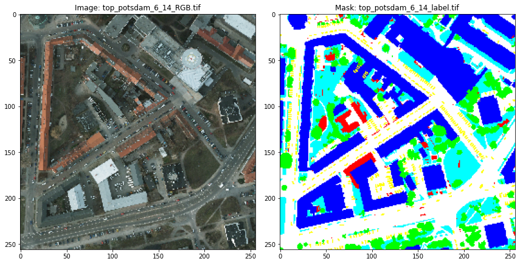
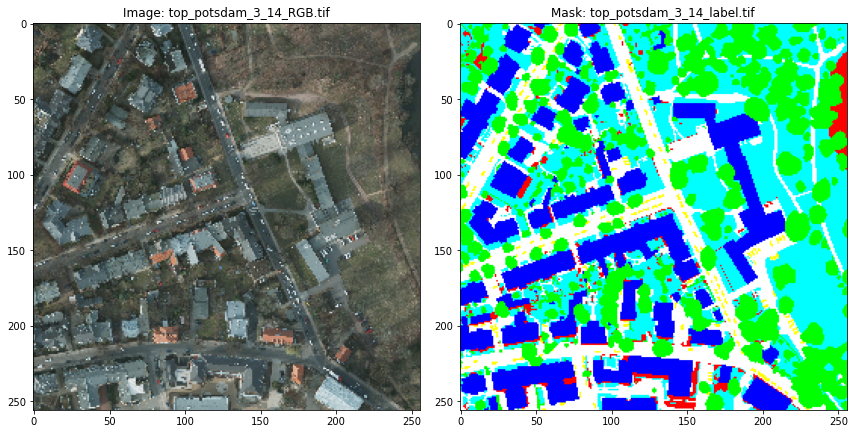
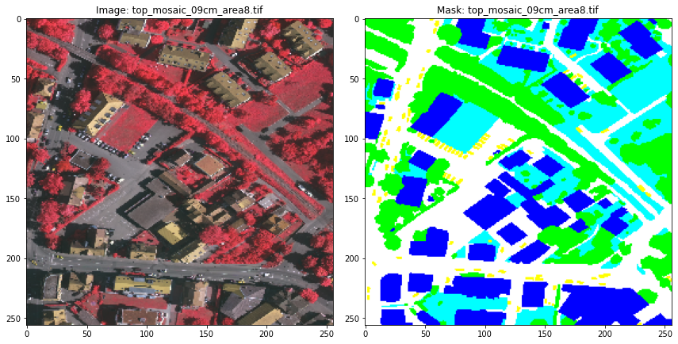
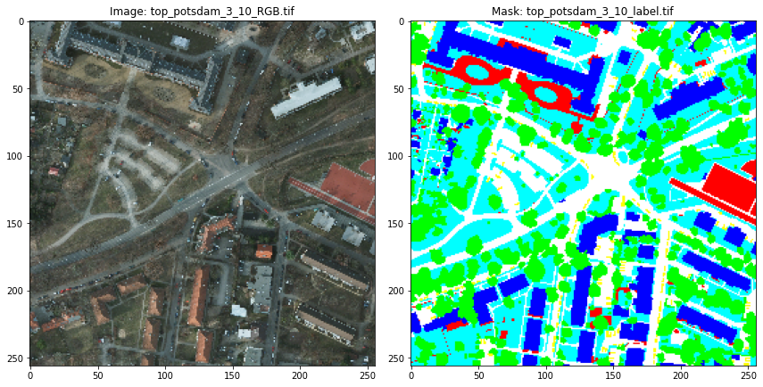
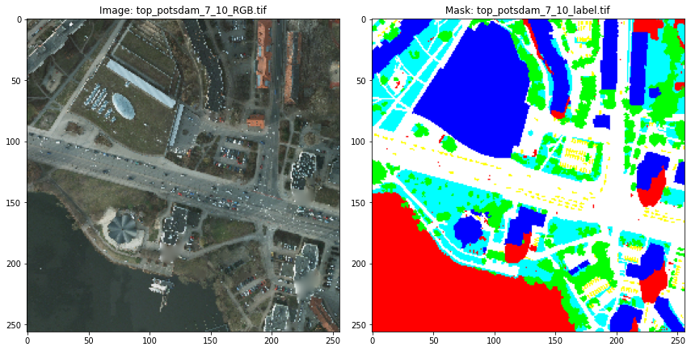
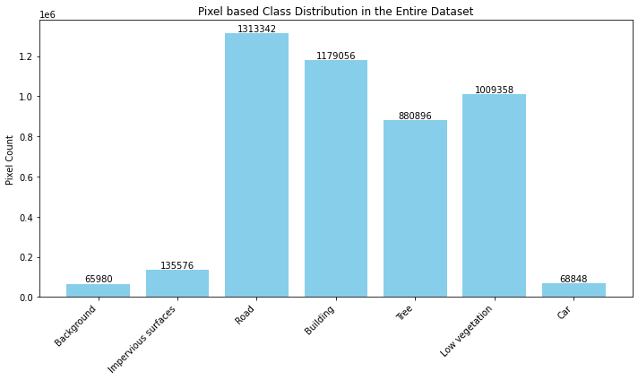
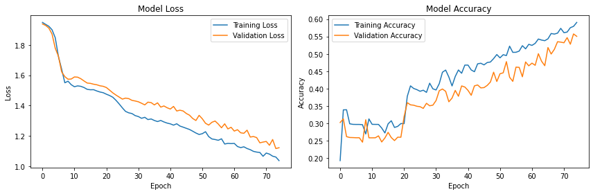
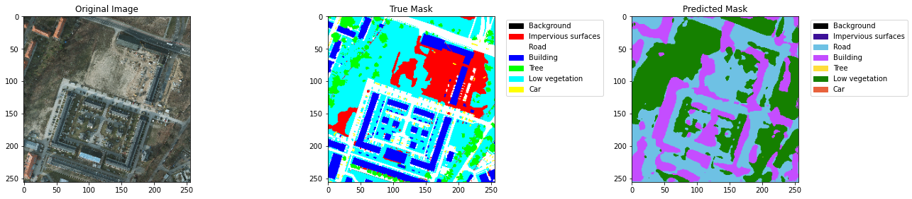
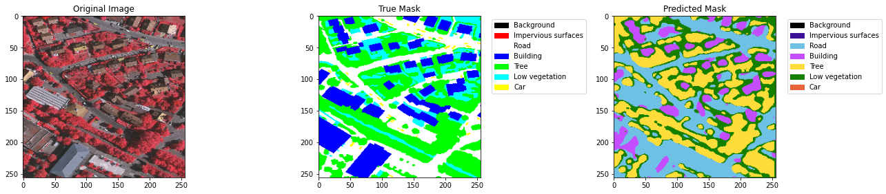
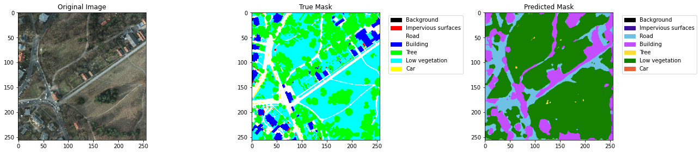

...: return f1_score
...:
...: # Callback to format output during training
...: class CustomCallback(tf.keras.callbacks.Callback):
...: def on_epoch_end(self, epoch, logs=None):
...: train_loss = logs.get('loss')
...: train_accuracy = logs.get('accuracy')
...: train_iou = logs.get('iou_metric')
...: train_precision = logs.get('precision_metric')
...: train_recall = logs.get('recall_metric')
...: train_f1 = logs.get('f1_metric')
...:
...: val_loss = logs.get('val_loss')
...: val_accuracy = logs.get('val_accuracy')
...: val_iou = logs.get('val_iou_metric')
...: val_precision = logs.get('val_precision_metric')
...: val_recall = logs.get('val_recall_metric')
...: val_f1 = logs.get('val_f1_metric')
...:
...: print(f"Epoch {epoch+1}:")
...: print(f"Train - Loss: {train_loss:.4f}, Acc: {train_accuracy*100:.2f}%, IoU: {train_iou*100:.2f}%, "
...: f"Precision: {train_precision*100:.2f}%, Recall: {train_recall*100:.2f}%, F1: {train_f1*100:.2f}%")
...: print(f"Val - Loss: {val_loss:.4f}, Acc: {val_accuracy*100:.2f}%, IoU: {val_iou*100:.2f}%, "
...: f"Precision: {val_precision*100:.2f}%, Recall: {val_recall*100:.2f}%, F1: {val_f1*100:.2f}%\n")
...:
...: #==============================================================================
...: # Compile and train the model
...: def train_model(train_df, val_df, num_classes=7, batch_size=32, epochs=75):
...: model = unet_model(num_classes=num_classes)
...: optimizer = tf.keras.optimizers.Adam(learning_rate=1e-4)
...:
...: # Added custom metrics to the compilation
...: model.compile(optimizer=optimizer, loss=cce_loss, metrics=[
...: 'accuracy',
...: iou_metric,
...: precision_metric,
...: recall_metric,
...: f1_metric
...: ])
...:
...: # Training the model
...: history = model.fit(
...: x=np.stack(train_df['image_array'].values),
...: y=np.stack(train_df['mask_array'].values),
...: validation_data=(np.stack(val_df['image_array'].values), np.stack(val_df['mask_array'].values)),
...: epochs=epochs,
...: batch_size=batch_size,
...: verbose=0,
...: callbacks=[CustomCallback(), tf.keras.callbacks.EarlyStopping(monitor='val_loss', patience=5, restore_best_weights=True)]
...: )
...:
...: return model, history
...:
...: # Plot training history
...: def plot_training_history(history):
...: plt.figure(figsize=(12, 4))
...: plt.subplot(1, 2, 1)
...: plt.plot(history.history['loss'], label='Training Loss')
...: plt.plot(history.history['val_loss'], label='Validation Loss')
...: plt.title('Model Loss')
...: plt.xlabel('Epoch')
...: plt.ylabel('Loss')
...: plt.legend()
...:
...: plt.subplot(1, 2, 2)
...: plt.plot(history.history['accuracy'], label='Training Accuracy')
...: plt.plot(history.history['val_accuracy'], label='Validation Accuracy')
...: plt.title('Model Accuracy')
...: plt.xlabel('Epoch')
...: plt.ylabel('Accuracy')
...: plt.legend()
...:
...: plt.tight_layout()
...: plt.show()
...:
...: # Model evaluation on test set
...: def evaluate_model(model, test_df, num_classes=7):
...: test_images = np.stack(test_df['image_array'].values)
...: test_masks = np.stack(test_df['mask_array'].values)
...:
...: # Evaluate model performance
...: metrics = model.evaluate(test_images, test_masks, verbose=0)
...:
...: # Unpack the metrics
...: loss = metrics[0]
...: accuracy = metrics[1]
...: iou = metrics[2]
...: precision = metrics[3]
...: recall = metrics[4]
...: f1 = metrics[5]
...:
...: # Print the results
...: print(f"Test Loss: {loss:.4f}")
...: print(f"Test Accuracy: {accuracy*100:.2f}%")
...: print(f"Test IoU: {iou*100:.2f}%")
...: print(f"Precision: {precision*100:.2f}%")
...: print(f"Recall: {recall*100:.2f}%")
...: print(f"F1 Score: {f1*100:.2f}%")
...:
...: # Predictions
...: y_pred = model.predict(test_images)
...: y_pred_classes = np.argmax(y_pred, axis=-1)
...:
...: return y_pred, y_pred_classes
...: #==============================================================================
...: # Visualize predictions for a few test images
...: def visualize_predictions(model, test_df, seg_classes, color_rgb, pred_color_rgb, num_samples=5):
...: for i in range(num_samples):
...: # Load image and true mask
...: image = test_df['image_array'].iloc[i]
...: true_mask = test_df['mask_array'].iloc[i]
...:
...: # Predict mask from the model
...: prediction = model.predict(np.expand_dims(image, axis=0))[0]
...: predicted_mask = np.argmax(prediction, axis=-1)
...:
...: # Convert true mask and predicted mask to RGB format using the provided color maps
...: true_mask_rgb = class_to_rgb(np.argmax(true_mask, axis=-1), color_rgb)
...: predicted_mask_rgb = class_to_rgb(predicted_mask, pred_color_rgb)
...:
...: # Plot the original image, true mask, and predicted mask
...: fig, (ax1, ax2, ax3) = plt.subplots(1, 3, figsize=(18, 6))
...:
...: ax1.imshow(image)
...: ax1.set_title('Original Image')
...:
...: ax2.imshow(true_mask_rgb)
...: ax2.set_title('True Mask')
...:
...: ax3.imshow(predicted_mask_rgb)
...: ax3.set_title('Predicted Mask')
...:
...: # Add legend for true mask segmentation classes
...: true_legend_handles = [mpatches.Patch(color=np.array(color_rgb[idx])/255, label=class_name)
...: for idx, class_name in enumerate(seg_classes)]
...: ax2.legend(handles=true_legend_handles, bbox_to_anchor=(1.05, 1), loc='upper left', fontsize=10)
...:
...: # Add legend for predicted mask segmentation classes
...: pred_legend_handles = [mpatches.Patch(color=np.array(pred_color_rgb[idx])/255, label=class_name)
...: for idx, class_name in enumerate(seg_classes)]
...: ax3.legend(handles=pred_legend_handles, bbox_to_anchor=(1.05, 1), loc='upper left', fontsize=10)
...:
...: plt.tight_layout()
...: plt.show()
...:
...: # Train the model
...: model, history = train_model(train_df, val_df)
...:
...: # Plot training history
...: plot_training_history(history)
...:
...: # Evaluate model on test set
...: y_pred, y_pred_classes = evaluate_model(model, test_df, num_classes=len(seg_classes))
...:
...: # Visualize predictions for the first 5 test images
...: visualize_predictions(model, test_df, seg_classes, color_rgb, pred_color_rgb, num_samples=5)
Total number of image-mask pairs: 71
Missing Images: 0
Missing Masks: 0
Total valid image-mask pairs: 71






Unique image shapes: [256] x [256]
Unique mask shapes: [256] x [256]
Epoch 1:
Train - Loss: 1.9484, Acc: 19.28%, IoU: 19.96%, Precision: 19.96%, Recall: 19.96%, F1: 19.96%
Val - Loss: 1.9385, Acc: 30.23%, IoU: 30.23%, Precision: 30.24%, Recall: 30.23%, F1: 30.24%
Epoch 2:
Train - Loss: 1.9354, Acc: 33.88%, IoU: 35.29%, Precision: 35.29%, Recall: 35.29%, F1: 35.29%
Val - Loss: 1.9283, Acc: 31.29%, IoU: 31.29%, Precision: 31.29%, Recall: 31.29%, F1: 31.29%
Epoch 3:
Train - Loss: 1.9230, Acc: 33.92%, IoU: 32.29%, Precision: 32.29%, Recall: 32.29%, F1: 32.29%
Val - Loss: 1.9112, Acc: 26.18%, IoU: 26.18%, Precision: 26.18%, Recall: 26.18%, F1: 26.18%
Epoch 4:
Train - Loss: 1.8999, Acc: 29.87%, IoU: 29.95%, Precision: 29.95%, Recall: 29.95%, F1: 29.95%
Val - Loss: 1.8716, Acc: 25.93%, IoU: 25.93%, Precision: 25.93%, Recall: 25.93%, F1: 25.93%
Epoch 5:
Train - Loss: 1.8474, Acc: 29.71%, IoU: 29.40%, Precision: 29.40%, Recall: 29.40%, F1: 29.40%
Val - Loss: 1.7784, Acc: 25.90%, IoU: 25.90%, Precision: 25.90%, Recall: 25.90%, F1: 25.90%
Epoch 6:
Train - Loss: 1.7233, Acc: 29.69%, IoU: 31.17%, Precision: 31.17%, Recall: 31.17%, F1: 31.17%
Val - Loss: 1.7252, Acc: 25.86%, IoU: 25.86%, Precision: 25.86%, Recall: 25.86%, F1: 25.86%
Epoch 7:
Train - Loss: 1.6407, Acc: 29.69%, IoU: 31.00%, Precision: 31.00%, Recall: 31.00%, F1: 31.00%
Val - Loss: 1.6226, Acc: 25.86%, IoU: 25.86%, Precision: 25.86%, Recall: 25.86%, F1: 25.86%
Epoch 8:
Train - Loss: 1.5503, Acc: 29.61%, IoU: 29.64%, Precision: 29.64%, Recall: 29.65%, F1: 29.65%
Val - Loss: 1.5908, Acc: 24.59%, IoU: 24.59%, Precision: 24.59%, Recall: 24.59%, F1: 24.59%
Epoch 9:
Train - Loss: 1.5608, Acc: 26.94%, IoU: 26.95%, Precision: 26.95%, Recall: 26.95%, F1: 26.95%
Val - Loss: 1.5738, Acc: 31.03%, IoU: 31.03%, Precision: 31.03%, Recall: 31.03%, F1: 31.03%
Epoch 10:
Train - Loss: 1.5376, Acc: 31.28%, IoU: 30.52%, Precision: 30.52%, Recall: 30.52%, F1: 30.52%
Val - Loss: 1.5750, Acc: 25.84%, IoU: 25.84%, Precision: 25.84%, Recall: 25.84%, F1: 25.84%
Epoch 11:
Train - Loss: 1.5241, Acc: 29.72%, IoU: 30.99%, Precision: 30.99%, Recall: 30.99%, F1: 30.99%
Val - Loss: 1.5886, Acc: 25.84%, IoU: 25.84%, Precision: 25.84%, Recall: 25.84%, F1: 25.84%
Epoch 12:
Train - Loss: 1.5298, Acc: 29.70%, IoU: 29.75%, Precision: 29.75%, Recall: 29.75%, F1: 29.75%
Val - Loss: 1.5873, Acc: 25.85%, IoU: 25.85%, Precision: 25.85%, Recall: 25.85%, F1: 25.85%
Epoch 13:
Train - Loss: 1.5269, Acc: 29.69%, IoU: 30.27%, Precision: 30.27%, Recall: 30.28%, F1: 30.27%
Val - Loss: 1.5770, Acc: 26.40%, IoU: 26.40%, Precision: 26.40%, Recall: 26.40%, F1: 26.40%
Epoch 14:
Train - Loss: 1.5190, Acc: 28.65%, IoU: 28.12%, Precision: 28.12%, Recall: 28.12%, F1: 28.12%
Val - Loss: 1.5623, Acc: 24.64%, IoU: 24.64%, Precision: 24.64%, Recall: 24.64%, F1: 24.64%
Epoch 15:
Train - Loss: 1.5070, Acc: 27.24%, IoU: 26.64%, Precision: 26.64%, Recall: 26.64%, F1: 26.64%
Val - Loss: 1.5486, Acc: 25.80%, IoU: 25.80%, Precision: 25.80%, Recall: 25.80%, F1: 25.80%
Epoch 16:
Train - Loss: 1.5042, Acc: 29.86%, IoU: 29.62%, Precision: 29.62%, Recall: 29.63%, F1: 29.63%
Val - Loss: 1.5464, Acc: 27.42%, IoU: 27.42%, Precision: 27.42%, Recall: 27.42%, F1: 27.42%
Epoch 17:
Train - Loss: 1.5047, Acc: 30.75%, IoU: 30.74%, Precision: 30.74%, Recall: 30.75%, F1: 30.74%
Val - Loss: 1.5408, Acc: 25.91%, IoU: 25.91%, Precision: 25.91%, Recall: 25.91%, F1: 25.91%
Epoch 18:
Train - Loss: 1.4963, Acc: 28.82%, IoU: 26.63%, Precision: 26.63%, Recall: 26.64%, F1: 26.64%
Val - Loss: 1.5371, Acc: 25.04%, IoU: 25.04%, Precision: 25.04%, Recall: 25.04%, F1: 25.04%
Epoch 19:
Train - Loss: 1.4894, Acc: 29.13%, IoU: 30.96%, Precision: 30.96%, Recall: 30.96%, F1: 30.96%
Val - Loss: 1.5304, Acc: 26.01%, IoU: 26.01%, Precision: 26.01%, Recall: 26.01%, F1: 26.01%
Epoch 20:
Train - Loss: 1.4848, Acc: 29.94%, IoU: 29.74%, Precision: 29.74%, Recall: 29.75%, F1: 29.74%
Val - Loss: 1.5269, Acc: 26.01%, IoU: 26.01%, Precision: 26.01%, Recall: 26.01%, F1: 26.01%
Epoch 21:
Train - Loss: 1.4748, Acc: 29.92%, IoU: 29.33%, Precision: 29.33%, Recall: 29.34%, F1: 29.34%
Val - Loss: 1.5188, Acc: 31.92%, IoU: 31.92%, Precision: 31.92%, Recall: 31.92%, F1: 31.92%
Epoch 22:
Train - Loss: 1.4662, Acc: 37.77%, IoU: 38.98%, Precision: 38.98%, Recall: 38.98%, F1: 38.98%
Val - Loss: 1.5017, Acc: 35.96%, IoU: 35.96%, Precision: 35.96%, Recall: 35.96%, F1: 35.96%
Epoch 23:
Train - Loss: 1.4549, Acc: 40.79%, IoU: 39.74%, Precision: 39.74%, Recall: 39.75%, F1: 39.75%
Val - Loss: 1.4838, Acc: 35.32%, IoU: 35.32%, Precision: 35.32%, Recall: 35.32%, F1: 35.32%
Epoch 24:
Train - Loss: 1.4346, Acc: 40.04%, IoU: 41.99%, Precision: 41.99%, Recall: 41.99%, F1: 41.99%
Val - Loss: 1.4692, Acc: 35.22%, IoU: 35.22%, Precision: 35.22%, Recall: 35.22%, F1: 35.22%
Epoch 25:
Train - Loss: 1.4106, Acc: 39.70%, IoU: 42.16%, Precision: 42.16%, Recall: 42.16%, F1: 42.16%
Val - Loss: 1.4559, Acc: 34.92%, IoU: 34.92%, Precision: 34.92%, Recall: 34.92%, F1: 34.92%
Epoch 26:
Train - Loss: 1.3847, Acc: 39.23%, IoU: 36.55%, Precision: 36.55%, Recall: 36.56%, F1: 36.56%
Val - Loss: 1.4425, Acc: 34.79%, IoU: 34.79%, Precision: 34.79%, Recall: 34.79%, F1: 34.79%
Epoch 27:
Train - Loss: 1.3614, Acc: 39.54%, IoU: 39.02%, Precision: 39.02%, Recall: 39.03%, F1: 39.03%
Val - Loss: 1.4491, Acc: 34.31%, IoU: 34.31%, Precision: 34.31%, Recall: 34.31%, F1: 34.31%
Epoch 28:
Train - Loss: 1.3519, Acc: 38.92%, IoU: 37.97%, Precision: 37.97%, Recall: 37.98%, F1: 37.97%
Val - Loss: 1.4456, Acc: 35.77%, IoU: 35.77%, Precision: 35.77%, Recall: 35.77%, F1: 35.77%
Epoch 29:
Train - Loss: 1.3472, Acc: 41.55%, IoU: 40.95%, Precision: 40.95%, Recall: 40.95%, F1: 40.95%
Val - Loss: 1.4343, Acc: 35.05%, IoU: 35.05%, Precision: 35.05%, Recall: 35.05%, F1: 35.05%
Epoch 30:
Train - Loss: 1.3337, Acc: 39.94%, IoU: 41.37%, Precision: 41.37%, Recall: 41.37%, F1: 41.37%
Val - Loss: 1.4302, Acc: 35.23%, IoU: 35.23%, Precision: 35.23%, Recall: 35.23%, F1: 35.23%
Epoch 31:
Train - Loss: 1.3275, Acc: 39.60%, IoU: 41.10%, Precision: 41.10%, Recall: 41.11%, F1: 41.10%
Val - Loss: 1.4250, Acc: 36.56%, IoU: 36.56%, Precision: 36.56%, Recall: 36.56%, F1: 36.56%
Epoch 32:
Train - Loss: 1.3159, Acc: 41.42%, IoU: 40.95%, Precision: 40.95%, Recall: 40.96%, F1: 40.96%
Val - Loss: 1.4151, Acc: 39.39%, IoU: 39.39%, Precision: 39.39%, Recall: 39.39%, F1: 39.39%
Epoch 33:
Train - Loss: 1.3225, Acc: 44.71%, IoU: 44.27%, Precision: 44.27%, Recall: 44.28%, F1: 44.28%
Val - Loss: 1.4045, Acc: 39.88%, IoU: 39.88%, Precision: 39.88%, Recall: 39.88%, F1: 39.88%
Epoch 34:
Train - Loss: 1.3075, Acc: 45.33%, IoU: 47.09%, Precision: 47.09%, Recall: 47.09%, F1: 47.09%
Val - Loss: 1.4225, Acc: 39.22%, IoU: 39.22%, Precision: 39.22%, Recall: 39.22%, F1: 39.22%
Epoch 35:
Train - Loss: 1.3116, Acc: 43.33%, IoU: 43.08%, Precision: 43.08%, Recall: 43.09%, F1: 43.09%
Val - Loss: 1.4193, Acc: 36.21%, IoU: 36.21%, Precision: 36.21%, Recall: 36.21%, F1: 36.21%
Epoch 36:
Train - Loss: 1.3015, Acc: 40.77%, IoU: 40.03%, Precision: 40.03%, Recall: 40.04%, F1: 40.03%
Val - Loss: 1.4043, Acc: 37.27%, IoU: 37.27%, Precision: 37.27%, Recall: 37.27%, F1: 37.27%
Epoch 37:
Train - Loss: 1.2945, Acc: 43.49%, IoU: 44.57%, Precision: 44.57%, Recall: 44.57%, F1: 44.57%
Val - Loss: 1.4179, Acc: 39.47%, IoU: 39.47%, Precision: 39.47%, Recall: 39.47%, F1: 39.47%
Epoch 38:
Train - Loss: 1.3017, Acc: 45.36%, IoU: 43.45%, Precision: 43.45%, Recall: 43.45%, F1: 43.45%
Val - Loss: 1.3897, Acc: 37.80%, IoU: 37.80%, Precision: 37.80%, Recall: 37.80%, F1: 37.80%
Epoch 39:
Train - Loss: 1.2919, Acc: 44.41%, IoU: 47.39%, Precision: 47.39%, Recall: 47.40%, F1: 47.40%
Val - Loss: 1.3973, Acc: 40.77%, IoU: 40.77%, Precision: 40.77%, Recall: 40.77%, F1: 40.77%
Epoch 40:
Train - Loss: 1.2843, Acc: 46.76%, IoU: 47.14%, Precision: 47.14%, Recall: 47.14%, F1: 47.14%
Val - Loss: 1.3855, Acc: 40.45%, IoU: 40.45%, Precision: 40.45%, Recall: 40.45%, F1: 40.45%
Epoch 41:
Train - Loss: 1.2793, Acc: 46.76%, IoU: 47.32%, Precision: 47.32%, Recall: 47.33%, F1: 47.33%
Val - Loss: 1.3770, Acc: 39.48%, IoU: 39.48%, Precision: 39.48%, Recall: 39.48%, F1: 39.48%
Epoch 42:
Train - Loss: 1.2708, Acc: 45.36%, IoU: 45.49%, Precision: 45.49%, Recall: 45.50%, F1: 45.49%
Val - Loss: 1.3943, Acc: 38.08%, IoU: 38.08%, Precision: 38.08%, Recall: 38.08%, F1: 38.08%
Epoch 43:
Train - Loss: 1.2799, Acc: 44.85%, IoU: 48.26%, Precision: 48.26%, Recall: 48.27%, F1: 48.26%
Val - Loss: 1.3642, Acc: 40.78%, IoU: 40.78%, Precision: 40.78%, Recall: 40.78%, F1: 40.78%
Epoch 44:
Train - Loss: 1.2648, Acc: 47.13%, IoU: 46.24%, Precision: 46.24%, Recall: 46.24%, F1: 46.24%
Val - Loss: 1.3694, Acc: 41.05%, IoU: 41.05%, Precision: 41.05%, Recall: 41.05%, F1: 41.05%
Epoch 45:
Train - Loss: 1.2576, Acc: 47.29%, IoU: 45.98%, Precision: 45.98%, Recall: 45.98%, F1: 45.98%
Val - Loss: 1.3643, Acc: 40.20%, IoU: 40.20%, Precision: 40.20%, Recall: 40.20%, F1: 40.20%
Epoch 46:
Train - Loss: 1.2498, Acc: 46.83%, IoU: 48.25%, Precision: 48.25%, Recall: 48.27%, F1: 48.26%
Val - Loss: 1.3477, Acc: 40.29%, IoU: 40.29%, Precision: 40.29%, Recall: 40.29%, F1: 40.29%
Epoch 47:
Train - Loss: 1.2422, Acc: 47.50%, IoU: 48.43%, Precision: 48.43%, Recall: 48.43%, F1: 48.43%
Val - Loss: 1.3364, Acc: 40.91%, IoU: 40.91%, Precision: 40.91%, Recall: 40.91%, F1: 40.91%
Epoch 48:
Train - Loss: 1.2308, Acc: 47.65%, IoU: 47.76%, Precision: 47.76%, Recall: 47.76%, F1: 47.76%
Val - Loss: 1.3147, Acc: 41.90%, IoU: 41.90%, Precision: 41.90%, Recall: 41.90%, F1: 41.90%
Epoch 49:
Train - Loss: 1.2188, Acc: 48.63%, IoU: 49.36%, Precision: 49.36%, Recall: 49.36%, F1: 49.36%
Val - Loss: 1.3014, Acc: 44.72%, IoU: 44.72%, Precision: 44.72%, Recall: 44.72%, F1: 44.72%
Epoch 50:
Train - Loss: 1.2092, Acc: 49.80%, IoU: 50.68%, Precision: 50.68%, Recall: 50.69%, F1: 50.69%
Val - Loss: 1.3355, Acc: 42.04%, IoU: 42.04%, Precision: 42.04%, Recall: 42.04%, F1: 42.04%
Epoch 51:
Train - Loss: 1.2144, Acc: 48.85%, IoU: 47.51%, Precision: 47.51%, Recall: 47.53%, F1: 47.52%
Val - Loss: 1.3128, Acc: 44.27%, IoU: 44.27%, Precision: 44.27%, Recall: 44.27%, F1: 44.27%
Epoch 52:
Train - Loss: 1.2275, Acc: 49.76%, IoU: 48.16%, Precision: 48.16%, Recall: 48.17%, F1: 48.16%
Val - Loss: 1.2831, Acc: 44.54%, IoU: 44.54%, Precision: 44.54%, Recall: 44.54%, F1: 44.54%
Epoch 53:
Train - Loss: 1.1952, Acc: 49.50%, IoU: 48.20%, Precision: 48.20%, Recall: 48.21%, F1: 48.21%
Val - Loss: 1.2712, Acc: 47.76%, IoU: 47.76%, Precision: 47.76%, Recall: 47.76%, F1: 47.76%
Epoch 54:
Train - Loss: 1.1797, Acc: 52.21%, IoU: 52.33%, Precision: 52.33%, Recall: 52.35%, F1: 52.34%
Val - Loss: 1.2897, Acc: 43.28%, IoU: 43.28%, Precision: 43.28%, Recall: 43.28%, F1: 43.28%
Epoch 55:
Train - Loss: 1.1759, Acc: 50.43%, IoU: 51.44%, Precision: 51.44%, Recall: 51.45%, F1: 51.45%
Val - Loss: 1.2979, Acc: 42.09%, IoU: 42.09%, Precision: 42.09%, Recall: 42.09%, F1: 42.09%
Epoch 56:
Train - Loss: 1.1709, Acc: 50.45%, IoU: 49.76%, Precision: 49.76%, Recall: 49.78%, F1: 49.77%
Val - Loss: 1.2781, Acc: 46.17%, IoU: 46.17%, Precision: 46.17%, Recall: 46.17%, F1: 46.17%
Epoch 57:
Train - Loss: 1.1807, Acc: 50.79%, IoU: 50.59%, Precision: 50.59%, Recall: 50.59%, F1: 50.59%
Val - Loss: 1.2534, Acc: 46.11%, IoU: 46.11%, Precision: 46.11%, Recall: 46.11%, F1: 46.11%
Epoch 58:
Train - Loss: 1.1462, Acc: 52.35%, IoU: 53.64%, Precision: 53.64%, Recall: 53.65%, F1: 53.65%
Val - Loss: 1.2796, Acc: 43.40%, IoU: 43.40%, Precision: 43.40%, Recall: 43.40%, F1: 43.40%
Epoch 59:
Train - Loss: 1.1506, Acc: 51.44%, IoU: 53.88%, Precision: 53.88%, Recall: 53.88%, F1: 53.88%
Val - Loss: 1.2460, Acc: 47.66%, IoU: 47.66%, Precision: 47.66%, Recall: 47.66%, F1: 47.66%
Epoch 60:
Train - Loss: 1.1491, Acc: 52.74%, IoU: 52.51%, Precision: 52.51%, Recall: 52.52%, F1: 52.52%
Val - Loss: 1.2567, Acc: 46.56%, IoU: 46.56%, Precision: 46.56%, Recall: 46.56%, F1: 46.55%
Epoch 61:
Train - Loss: 1.1503, Acc: 52.43%, IoU: 52.89%, Precision: 52.89%, Recall: 52.89%, F1: 52.89%
Val - Loss: 1.2317, Acc: 47.32%, IoU: 47.32%, Precision: 47.32%, Recall: 47.32%, F1: 47.32%
Epoch 62:
Train - Loss: 1.1299, Acc: 53.02%, IoU: 52.91%, Precision: 52.91%, Recall: 52.92%, F1: 52.92%
Val - Loss: 1.2406, Acc: 46.70%, IoU: 46.70%, Precision: 46.70%, Recall: 46.70%, F1: 46.70%
Epoch 63:
Train - Loss: 1.1225, Acc: 54.26%, IoU: 52.44%, Precision: 52.44%, Recall: 52.45%, F1: 52.45%
Val - Loss: 1.2204, Acc: 50.04%, IoU: 50.04%, Precision: 50.04%, Recall: 50.04%, F1: 50.04%
Epoch 64:
Train - Loss: 1.1279, Acc: 53.96%, IoU: 54.33%, Precision: 54.33%, Recall: 54.34%, F1: 54.34%
Val - Loss: 1.2170, Acc: 47.87%, IoU: 47.87%, Precision: 47.87%, Recall: 47.87%, F1: 47.87%
Epoch 65:
Train - Loss: 1.1165, Acc: 53.78%, IoU: 54.63%, Precision: 54.63%, Recall: 54.64%, F1: 54.63%
Val - Loss: 1.2376, Acc: 46.59%, IoU: 46.59%, Precision: 46.59%, Recall: 46.59%, F1: 46.59%
Epoch 66:
Train - Loss: 1.1090, Acc: 54.32%, IoU: 54.17%, Precision: 54.17%, Recall: 54.17%, F1: 54.17%
Val - Loss: 1.1922, Acc: 51.81%, IoU: 51.81%, Precision: 51.81%, Recall: 51.81%, F1: 51.81%
Epoch 67:
Train - Loss: 1.0978, Acc: 55.85%, IoU: 55.92%, Precision: 55.92%, Recall: 55.92%, F1: 55.92%
Val - Loss: 1.1959, Acc: 49.95%, IoU: 49.95%, Precision: 49.95%, Recall: 49.95%, F1: 49.95%
Epoch 68:
Train - Loss: 1.0931, Acc: 55.69%, IoU: 56.16%, Precision: 56.16%, Recall: 56.17%, F1: 56.16%
Val - Loss: 1.1886, Acc: 51.29%, IoU: 51.29%, Precision: 51.29%, Recall: 51.29%, F1: 51.29%
Epoch 69:
Train - Loss: 1.0904, Acc: 55.95%, IoU: 55.50%, Precision: 55.50%, Recall: 55.51%, F1: 55.50%
Val - Loss: 1.1542, Acc: 53.49%, IoU: 53.49%, Precision: 53.49%, Recall: 53.49%, F1: 53.49%
Epoch 70:
Train - Loss: 1.0653, Acc: 57.34%, IoU: 56.60%, Precision: 56.60%, Recall: 56.61%, F1: 56.60%
Val - Loss: 1.1591, Acc: 53.37%, IoU: 53.37%, Precision: 53.37%, Recall: 53.37%, F1: 53.37%
Epoch 71:
Train - Loss: 1.0867, Acc: 56.09%, IoU: 55.40%, Precision: 55.40%, Recall: 55.42%, F1: 55.41%
Val - Loss: 1.1633, Acc: 53.19%, IoU: 53.19%, Precision: 53.19%, Recall: 53.19%, F1: 53.19%
Epoch 72:
Train - Loss: 1.0797, Acc: 56.26%, IoU: 54.49%, Precision: 54.49%, Recall: 54.51%, F1: 54.50%
Val - Loss: 1.1380, Acc: 54.67%, IoU: 54.67%, Precision: 54.67%, Recall: 54.67%, F1: 54.67%
Epoch 73:
Train - Loss: 1.0660, Acc: 57.53%, IoU: 58.90%, Precision: 58.90%, Recall: 58.91%, F1: 58.90%
Val - Loss: 1.1759, Acc: 52.77%, IoU: 52.77%, Precision: 52.77%, Recall: 52.77%, F1: 52.77%
Epoch 74:
Train - Loss: 1.0604, Acc: 57.91%, IoU: 56.40%, Precision: 56.40%, Recall: 56.40%, F1: 56.40%
Val - Loss: 1.1163, Acc: 55.73%, IoU: 55.73%, Precision: 55.73%, Recall: 55.73%, F1: 55.73%
Epoch 75:
Train - Loss: 1.0367, Acc: 59.04%, IoU: 59.28%, Precision: 59.28%, Recall: 59.28%, F1: 59.28%
Val - Loss: 1.1219, Acc: 55.04%, IoU: 55.04%, Precision: 55.04%, Recall: 55.04%, F1: 55.04%

Test Loss: 1.5317
Test Accuracy: 48.94%
Test IoU: 48.94%
Precision: 48.94%
Recall: 52.43%
F1 Score: 50.62%
1/1 [==============================] - 0s 101ms/step
1/1 [==============================] - 1s 626ms/step
1/1 [==============================] - 0s 12ms/step

1/1 [==============================] - 0s 13ms/step

1/1 [==============================] - 0s 14ms/step

1/1 [==============================] - 0s 12ms/step

2024-09-24 18:53:51.216366: I tensorflow/core/platform/cpu_feature_guard.cc:193] This TensorFlow binary is optimized with oneAPI Deep Neural Network Library (oneDNN) to use the following CPU instructions in performance-critical operations: AVX AVX2
To enable them in other operations, rebuild TensorFlow with the appropriate compiler flags.
2024-09-24 18:53:51.534834: I tensorflow/core/common_runtime/gpu/gpu_device.cc:1616] Created device /job:localhost/replica:0/task:0/device:GPU:0 with 17602 MB memory: -> device: 0, name: NVIDIA RTX 4000 Ada Generation, pci bus id: 0000:01:00.0, compute capability: 8.9
2024-09-24 18:54:22.647443: I tensorflow/stream_executor/cuda/cuda_dnn.cc:384] Loaded cuDNN version 8100
2024-09-24 18:54:23.318971: E tensorflow/core/platform/windows/subprocess.cc:287] Call to CreateProcess failed. Error code: 2, command: '"ptxas.exe" "--version"'
2024-09-24 18:54:23.320360: E tensorflow/core/platform/windows/subprocess.cc:287] Call to CreateProcess failed. Error code: 2, command: '"ptxas.exe" "--version"'
2024-09-24 18:54:23.320373: W tensorflow/stream_executor/gpu/asm_compiler.cc:80] Couldn't get ptxas version string: INTERNAL: Couldn't invoke ptxas.exe --version
2024-09-24 18:54:23.324249: E tensorflow/core/platform/windows/subprocess.cc:287] Call to CreateProcess failed. Error code: 2, command: '"ptxas.exe" "C:\Users\ce841228\AppData\Local\Temp\/tempfile-ZEPPO-1832b0-1579864-622e13212753e" "-o" "C:\Users\ce841228\AppData\Local\Temp\/tempfile-ZEPPO-1832b0-1579864-622e132127ef0" "-arch=sm_89" "--warn-on-spills"'
2024-09-24 18:54:23.324468: W tensorflow/stream_executor/gpu/redzone_allocator.cc:314] INTERNAL: Failed to launch ptxas
Relying on driver to perform ptx compilation.
Modify $PATH to customize ptxas location.
This message will be only logged once.
2024-09-24 18:54:40.954323: I tensorflow/stream_executor/cuda/cuda_blas.cc:1614] TensorFloat-32 will be used for the matrix multiplication. This will only be logged once.
In [2]: